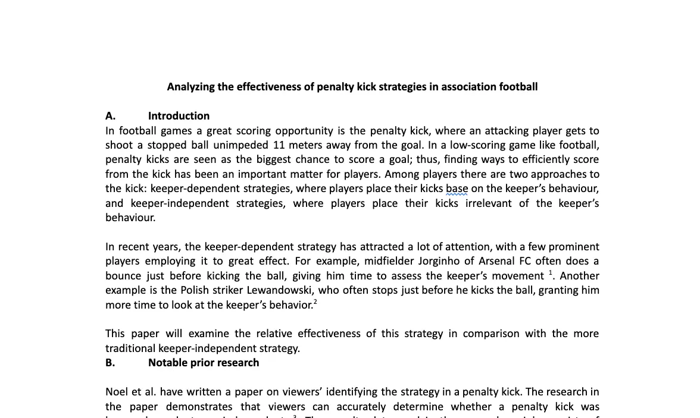
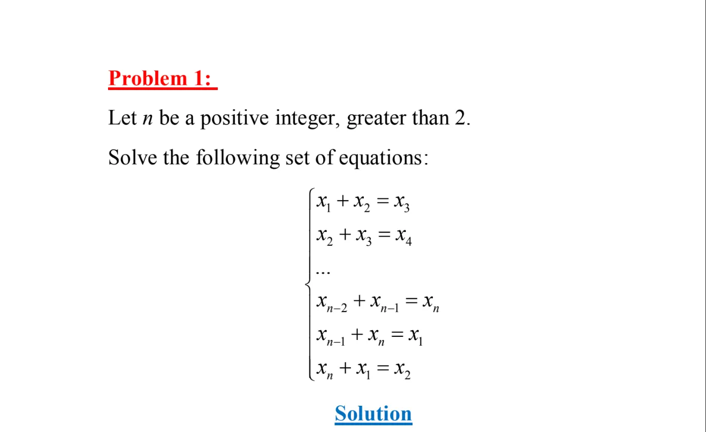

ABOUT ME
Who am I?
Visit my
resume
to know more
I am an undergraduate mathematics student at the University of North Carolina at Chapel Hill with a strong background in data science and AI. I have hands-on experience building machine learning models for fraud and customer churn detection at Techcombank and the VNPT-Qualcomm Center of Excellence, alongside research experience in statistical analysis and reinforcement learning.
Education University of North Carolina - Chapel Hill (Expected graduation: May 2028; BS Mathematics) University of Minnesota - Twin Cities (Sep 2024 - May 2026; BS Mathematics; GPA: 3.711)
Work Experience
Intern | VNPT-Qualcomm Center of Excellence (Hanoi, Vietnam)
Developed an AI-powered detection tool using Python to find signs of churning among customers of the company’s service provider. Found 5,000+ accounts close to churning among 100,000 accounts. Worked with fine-tuning the model, which used Gradient Boosting. The project resulted in a model with ~95% recall and ~32% precision.
AI Project Intern | Techcombank (Hanoi, Vietnam)
Detected 110,000+ fraudulent transactions by developing an AI-powered fraud detection tool in mobile banking using Python. Participated in daily planning sessions and helped with fine-tuning the model used for prediction, which uses the AdaBoost algorithm. The project resulted in a model with ~91% recall and ~45% precision.
Torque Control
Contributed to the research into torque and torque improvement using reinforcement learning in IPMSM motors, under the guidance of Prof. Vo Thanh Ha. Collected and cleaned data for each experiment. From those data points, established equations pertaining to motor physics. Used the equations in conjunction with data to compare motor torque in different stages of reinforcement learning.

Penalty Kicks
Collected and structured (using Excel) 600+ soccer penalty kick samples across top European leagues, UEFA competitions, and international tournaments to study penalty conversion strategies. Designed a sampling framework distinguishing in-game penalties vs. shootout penalties to account for player skill differences and contextual pressure. Implemented random matchday sampling to collect in-game penalty events and compiled historical shootout datasets from recent international tournaments. Calculated conversion rates, pressure coefficients, and strategy-level averages to analyze how situational pressure affects penalty success.

Math Book
Wrote a training book for students participating in the International Mathematical Olympiad (IMO), under the guidance of Prof. Nguyen Minh Duc. The book covers a variety of Math problems such as trigonometry equations and limits of a number sequence. 250+ copies gifted to secondary school students in Hanoi intending to specialize in Math.